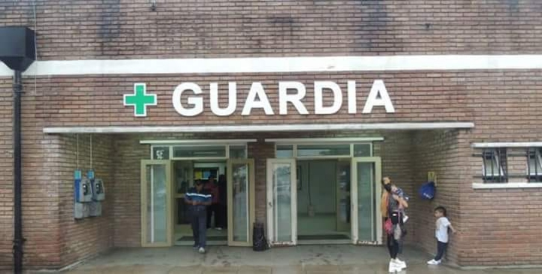

NOVEDADES

Como consecuencia del constante incremento de la demanda de este servicio, hemos ampliado el área de Guardia, logrando un espacio más confortable, duplicando su superficie, diferenciando las salas de espera en pediátrica y adultos, con acceso independiente para ambulancias y cuatro nuevos consultorios en el primer piso con sus correspondientes salas de espera (pediátrica y adultos).